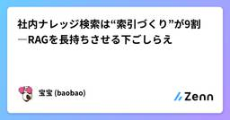

Zennの「QA」のフィード
フィード

社内ナレッジ検索は“索引づくり”が9割―RAGを長持ちさせる下ごしらえ
Zennの「QA」のフィード
はじめに——答えは出るのに、肝心な時に外すのはなぜか社内のQ&Aや手順書を読ませると、最初はよく当たるのに、規模が増えるほど外れが混じる。よく見ると、文章の分け方やタグの付け方、検索キーワードの前提がバラバラで、索引（インデックス）の作りが弱い。道具を替える前に、土台を整える話をします。検索ベースの強化や“文脈を盛る”手法は各所で整理され、RAGの精度に直結することが報告されています。例えば「文脈付き埋め込み／BM25」を併用する手法や、文書設計のベストプラクティスが公開されています。(Anthropic) まず決めるのは“どの質問に答えるか”万能な検索はありま...
7日前
アジャイルテストにおけるTesting Manifestについて自分なりに考えてみる
Zennの「QA」のフィード
はじめにアジャイルテストには"Testing Manifest"というものが存在します。詳しくは以下のブロッコリーさんのブログ＆紹介されている書籍をご覧ください。https://nihonbuson.hatenadiary.jp/entry/TestingManifestoこれらはRegistered Agile Testing研修というScrum Inc.のトレーニングでも扱われています。この記事ではそれを引用します。(内容としては同等です)最後にテストするよりもずっとテストし続けるTesting throughout over testing at the end...
7日前

テストとQAとデバッグの違い
Zennの「QA」のフィード
動機『テスト』『QA』『デバッグ』という３つの単語は同業者の間で明確に区別されているが、同業者以外には混同されがちだ。これらの単語をよく使うIT業界の人の方が積極的に混同している節すらあるし、なんなら最近は質問と回答、すなわちQ&AをQAと呼ぶ勢力まで現れて大変だ。デジタル庁を筆頭に。日本の法令に関する多肢選択式QAデータセットいろいろ理由を考えたが「単純に知られていないだけでは？」と思ったので、改めて定義するためにこの記事を書いている。 免責事項話をわかりやすくするために、省略した部分が多々ある。 テストとは？同業者の間ではバイブルとも呼べるJSTQBの...
9日前
QA効率化: JWTで実現するNFCタグ・QRコードのリダイレクトシステム
Zennの「QA」のフィード
TL;DR「NFCタグやQRコードでリダイレクトしたいけど、URLを直接埋め込むのは変更できなくて不便...」「URLを短縮サービスに頼るのはセキュリティ的に心配...」そんな悩み、JWTで解決しましょう。Cloudflare WorkersとHonoを使ったたった33行のコードで、署名付きリダイレクトURLを管理できます。NFCタグにURLを書き込んだ後でも、リダイレクト先を自由に変更可能。しかもエッジで超高速。// こんなにシンプルapp.get('/r', async (c) => { const token = c.req.query('t') con...
10日前
PIVOTにおける一人目QAエンジニアとしての軌跡
Zennの「QA」のフィード
ビジネス映像メディア「PIVOT」で、QA エンジニアをしている ケイスケ です。今回、一人目QAエンジニアとしてQAフロー確立までに行ってきたことを書き残していこうと思います。同じ境遇にいるQAエンジニア、QAエンジニアの採用を考えているチームの方など、ぜひ読んでいただけると嬉しいです！ 関係構築と現状把握 チームメンバーとの関係構築まずはチームメンバーとの関係構築からですが、個人的にはここが一番大事なポイントだと思っています。PIVOTにジョインする前も複数の開発現場を経験しており、最初の関係構築で失敗するとその後の動きづらさに影響するため、絶対に失敗できないという...
15日前
ソフトウェアテストが持つ「透明性」の側面
Zennの「QA」のフィード
ソフトウェアテストが持つ「透明性」の側面本記事はスクフェス三河2025で発表した内容を元に再構成した内容です。以下の内容もぜひご覧ください。https://www.docswell.com/s/55_ymzn/KN9QME-scrumfestmikawa2025【注意】本稿で紹介する内容は、やまずん（バキバキQA/Dirty Tester）の個人的な体験に基づいた活用法であり、所属団体や世の中のQA・テスターの一般的な見解、JSTQBなどの規格を忠実に紹介するものではありません。 はじめにアジャイル開発、あるいはスクラムの文脈において、「スクラム（アジャイル）にテ...
20日前
[Playwright]E2Eテスト自動化におけるAIコーディングルールの作り方
Zennの「QA」のフィード
こんにちは！アルダグラムでQAエンジニアをしている千葉です！ここ数年で、AIを使ったコーディングが一般的になり、プロダクトの開発スピードが飛躍的に向上しました。これにより、UIの変更といった仕様変更が頻繁に起こるようになりE2Eテストコードの整備も今まで以上にスピード感が求められる時代になったのでは？と思います。今回は、E2Eテストの自動化もAIを前提としたコーディングの環境を整備し、自動化のスピードを向上させよう！ということで、弊社で定義しているE2Eテスト自動化におけるAIコーディングルールをご紹介したいと思います！ 前提CursorやClaude code、GitHu...
24日前
リグレッションテストを「資産」にするためのプロセス改善
Zennの「QA」のフィード
はじめにe-dashでQAエンジニアをしているuedaです。この記事では、これまで粒度の粗いユースケース一覧を元に行っていたリグレッションテストを、より具体的で誰でも再現可能な「テストケース」という資産に進化させ、さらにその資産が陳腐化しないためのメンテナンスプロセスを構築した話をします。品質保証の土台を着実に固めていった、プロセス改善の記録です。 問題点1：リグレッションテストの属人化プロセス改善に着手する以前、私たちのリグレッションテストは「ユースケース一覧」という指針を元に実施していました。しかし、テストケースが整備されていなかったため、担当者がユースケースからテ...
1ヶ月前
JaSST'25 Kansai に参加してきました！
Zennの「QA」のフィード
はじめにこんにちは。ドリーム・アーツのShopらんでQAエンジニアをしている坂井です。ソフトウェアテストのカンファレンス JaSST'25 Kansai に参加してきました。大阪に行く機会が少ないため目的地までの電車にかなり苦労しましたが、会場には約60名ほどの参加者が集まり、JaSST Tokyoとは規模が小さい分、和気あいあいとした雰囲気が印象的でした。特に印象に残ったセッションを中心にレポートしたいと思います！雰囲気が伝わりづらいですが、会場の様子です。(もっと遠目で撮っておけばよかった...)また、JaSST'25 Tokyoにも参加したのでこちらもぜひ見ていた...
1ヶ月前
JaSST'25 Tokyo に参加してきました！
Zennの「QA」のフィード
はじめにこんにちは。ドリーム・アーツのShopらんでQAエンジニアをしている坂井です。今回はJaSST'25 Tokyoというソフトウェアテストのシンポジウムに参加してきたので、その中で印象に残ったセッションを紹介し、現在テストに関わっているやマネジメントを行なっているなど品質に関わっている、関心ある人の参考になればと思います。また、JaSST'25 Kansaiにも参加したのでこちらもぜひ見ていただけると嬉しいです！https://zenn.dev/dreamarts/articles/c9753224a079a0 JaSSTとはNPO法人ASTERが運営するソフトウ...
1ヶ月前
AIを日常業務に根づかせるために—QA視点で考える「業務データ品質」と組織プロセス
Zennの「QA」のフィード
要旨AI の働きは、モデルの良し悪し以上に入力されるデータの質に大きく依存する。日々の業務の一部を AI に移譲するためには、業務の中で生まれるデータ（チケット／設計書／議事録／決定履歴／FAQ 等）が高品質であることに越したことはない。本稿は、QA 視点でのデータ品質の観点と、組織としてそれを保つための仕組みを整理する。 なぜいま「業務データ品質」なのか 1. AI は“書かれた前提”にだけ忠実断片的な仕様、欠けた決定理由、揺れる用語は、そのまま曖昧な提案を生む。目的／前提／決定と理由／用語の統一が揃うほど、AI の外しは減る。 2. 速い合意は「同じ前提」...
1ヶ月前
探索的テスト入門 ~構造的な思考プロセスで探索的テストを実施する~
Zennの「QA」のフィード
はじめに「仕様書にはないバグを、どうやって見つけますか？」テスト経験が 2〜3 年ほどあると、多くの方がぶつかる課題です。要件書やテストケースを消化するだけでは、ユーザーが直面する“想定外の問題”を発見するのは難しい。そこで登場するのが 探索的テスト（Exploratory Testing） です。「自由にやる」活動と思われがちですが、実際には 構造化して実施することで成果が最大化 します。本記事では書籍『フルスタックテスティング』第 2 章の内容を整理し、実務に落とし込める形でまとめました。 TL;DR探索的テストは 仕様書外の不具合を発見するユーザー視点の活動...
1ヶ月前
バグのすみか: 色々なめんどうくさいの上
Zennの「QA」のフィード
こんにちは。ダイの大冒険エンジョイ勢のbun913と申します。私は国内では珍しい SDET（Software Development Engineer in Test）という職種で働いており、小さな日々のアウトプットを意識しています。テスト技術やQAなどの記事を書こうとすると（私にとっては）重くなりそうな記事が多いので、以下のようなZenn Book に日々の小さなアウトプットをまとめていくことで、私の頭の中だけではなく人の目に触れるようにアウトプットを気軽にできることを目指しています。今回は初めての投稿となりますが、カテゴリーとしては「バグのすみか」シリーズということで、SDET...
1ヶ月前
ワンオペQAがチームを作るまでの半年間を全部書く
Zennの「QA」のフィード
この記事は、2025年3月にワンオペでスタートしたQAチームの立ち上げを、振り返りながらまとめたものです。テストが属人化し、文書化もされていない状態からのスタートでしたが、半年かけて仕組みやドキュメント整備、採用まで手を広げながら、少しずつチームを形にしていきました。これからQAチームを立ち上げる方の参考になれば幸いです。 半年のタイムライン2025年3月 ── ワンオペでQAチームスタート │ ├─ リリース前のブラックボックステストを開始（QAチーム用の検証端末の用意なども） │ ├─ ドキュメント整備開始（テスト分析→...
1ヶ月前
自律的組織の設計図：ジャズに学ぶ5つの原則
Zennの「QA」のフィード
!この記事は毎週必ず記事がでるテックブログ Loglass Tech Blog Sprint の108週目の記事です！ 3年間連続達成まで残り51週となりました！ ログラスはジャズです優れたプロダクト開発チームと、卓越したジャズ・アンサンブル。実はこれ、目指すところや抱えがちな課題は同じなんです、って言ったら、信じられるでしょうか。 はじめにはじめまして。2025年6月から、株式会社ログラスへ QA として入社しました、テラと申します。音楽系の人生設計から、何の因果か QA の世界へと飛び込み、直近ではオンラインゲーム QA を担当しておりました。前回の Log...
1ヶ月前
品質は対話から生まれる ― QAユニットのなんでも相談会
Zennの「QA」のフィード
こんにちは！アルダグラムでエンジニアをしているshige_sです今回は、QAユニットで取り組んでいる新しい試み 「なんでも相談会」 についてご紹介します。 背景アルダグラムでは、5つの開発ユニットにそれぞれ専任のQAエンジニアが所属し、スクラムに参加しています。この体制により、開発の初期段階から施策をキャッチアップし、テスト戦略を十分に練ることができています。一方で、各QAエンジニアは開発ユニット業務に深く入り込む時間が長いため、QAユニット同士で知見を共有したり相談する場が不足していると感じていました。もちろん、プランニングやレトロスペクティブは実施していますが、議題が...
1ヶ月前
非エンジニアでも自動テストが作れる、MagicPodを使ってみた
Zennの「QA」のフィード
開発チームが拡大し、機能が増えるにつれて、品質管理の重要性が高まってきました。特に主要機能以外の部分で想定外の動作が発生することがあり、これらを効率的に検出する仕組みが必要になってきました。今回、非エンジニアでも使える自動テストツール「MagicPod」を実際に使ってみましたので、その体験をご紹介します。自社サービス「トコトン」でのテスト実施を通して感じた、MagicPodの特徴や使用感をまとめました。!執筆時点で提供されている機能で、MagicPod側で機能が変更になる場合もあります。 MagicPodとはMagicPodは、プログラミング知識がなくても直感的にWebアプ...
2ヶ月前
- QAとUXの境界を越える体験を - ビットキーは「JaSST’25 Niigata」にブースを出展します！
Zennの「QA」のフィード
はじめにこんにちは。株式会社ビットキー Software QAチームからお知らせです。ビットキーは、9/12(金)に開催の「JaSST'25 Niigata」にスポンサーブースを出展いたします✨ブースでは、JaSST'25 Tokyoで好評だったクイズ企画「bitbox Challenge」を実施します。今回はイベントテーマにもある「UX」から着想を得て、よりゲーム感覚で直感的に楽しめる企画へアップデートしました。AIを活用して開発した専用のクイズアプリを用意して、皆様のご来場をお待ちしています。この記事では、皆様に楽しんでいただくための企画内容を一足先にご紹介できればと...
2ヶ月前
未経験QAでも入社初月からテスト設計に参加できる Claude Code を活用した仕組みづくり
Zennの「QA」のフィード
はじめにEMとしてQAチームの立ち上げを担当している池田と申します。私たちのチームは立ち上げから半年ほどで、現在はブラックボックステストを中心に品質保証業務を行っています。メンバー構成は以下の通りです：実務未経験のQAエンジニア 2名第三者検証機関からの外部メンバー 2名今回は、実務未経験のQAエンジニアが入社初月からテスト設計業務に参加できるようにした仕組みについて紹介します。 解決したかった2つの課題 1. 新メンバーの即戦力化が必要だったチーム立ち上げ初期で人員も限られているため、早期に一定水準以上のテスト設計業務をしてもらう必要がありました。ドメイン知識...
2ヶ月前
百聞百見は一験にしかず ──WACATEで見えた、知識から実践への道筋
Zennの「QA」のフィード
こちらの記事は「MEDLEY Summer Tech Blog Relay」の10日目の記事です。https://developer.medley.jp/entry/2025/08/15/20250815/ はじめにこんにちは。株式会社メドレーでQAエンジニアをしている井津です。今年5月に開発者からQAエンジニアに転身し、現在は調剤薬局の基幹システムのQAをしています。6月に「WACATE2025夏」という1泊2日の合宿形式のワークショップに参加してきました。本記事では、WACATEのプログラム内容の詳細には触れず、私がWACATEを通じて、知識として理解しているだけの状態か...
2ヶ月前